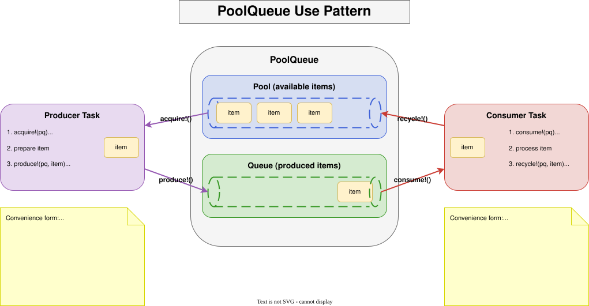
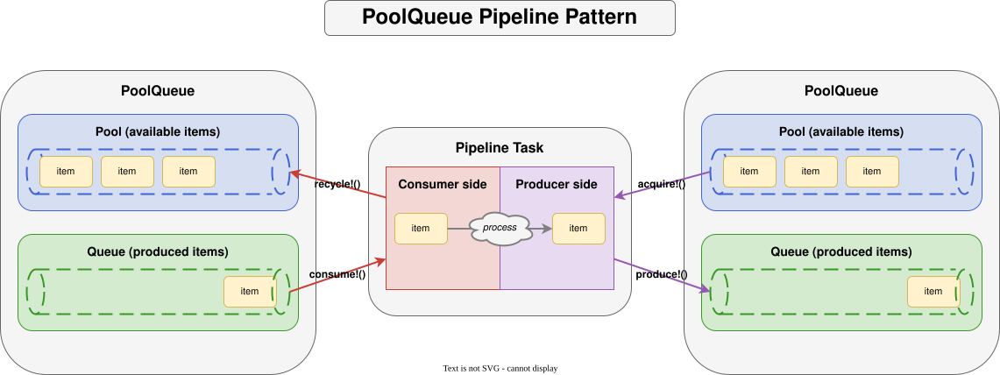
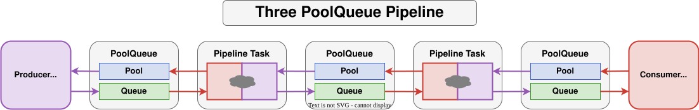

PoolQueues.jl
PoolQueues facilitate sharing of preallocated items between producer tasks and consumer tasks. By pre-populating a pool with preallocated items and recycling them back to the pool, memory allocations (and garbage collection) can be minimized in producer/consumer pipelines.
Overview
A PoolQueue is a coordination primitive built from two channels:
- a pool channel holding available (idle) items, and
- a queue channel carrying items in flight from producer to consumer.
The four main operations are:
| Operation | Called by | Purpose |
|---|---|---|
acquire! | producer | take an available item from the pool |
produce! | producer | put a (prepared) item onto the queue |
consume! | consumer | take an item from the queue |
recycle! | consumer | return a processed item to the pool |
Both produce! and consume! pair also have a function form that automatically handles acquire!/recycle!, so user code rarely needs to call those directly.
PoolQueue usage pattern
A producer task acquires an item from the pool, fills it, and produces it; a consumer task consumes the item, processes it, and recycles it back to the pool. The minimal PoolQueue application consists of a single PoolQueue with a producer task and a consumer task.

The basic usage pattern looks like this:
# Producer
while true
item = acquire!(pq)
# ... prepare item ...
produce!(pq, item)
end
# Consumer
while true
item = consume!(pq)
# ... process item ...
recycle!(pq, item)
endThe function forms make the acquire/recycle bookkeeping implicit:
# Producer
while true
produce!(pq) do item
# ... prepare item ...
return item
end
end
# Consumer
while true
consume!(pq) do item
# ... process item ...
return item
end
endThe pipeline pattern
A task can be a consumer of one PoolQueue and a producer to another PoolQueue. Such a task is known as a pipeline task.

# Pipeline task: consume from pq_in, produce to pq_out
while true
consume!(pq_in) do item_in
produce!(pq_out) do item_out
# ... transform item_in into item_out ...
return item_out # produced to pq_out's queue
end
return item_in # recycled back to pq_in's pool
end
endMulti-stage pipelines
Multiple PoolQueues can be chained to form a multi-stage pipeline, with each stage running in its own task and recycling items back to the stage that produced them.

Construction
A PoolQueue is most conveniently constructed by pre-populating the pool with np items created by a function or type constructor:
julia> using PoolQueues
julia> pq = PoolQueue(Vector{Float32}, 4, 4, undef, 2^20); # 4 uninitialized Vector{Float32} of length 2^20
julia> pq1 = PoolQueue(()->zeros(Float32, 2^20), 4, 4); # 4 Vector{Float32} of length 2^20 initialized to zeros
julia> nitems(pq)
(4, 0)
julia> maxsize(pq)
(4, 4)See the Guide for the full set of constructor patterns and the API Reference for complete signatures.
This documentation was initially generated by opencode (powered by the openai/GLM-5.2 model) and subsequently reviewed and edited by the package author.